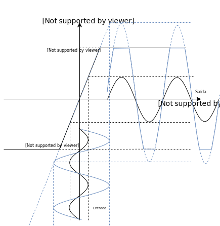
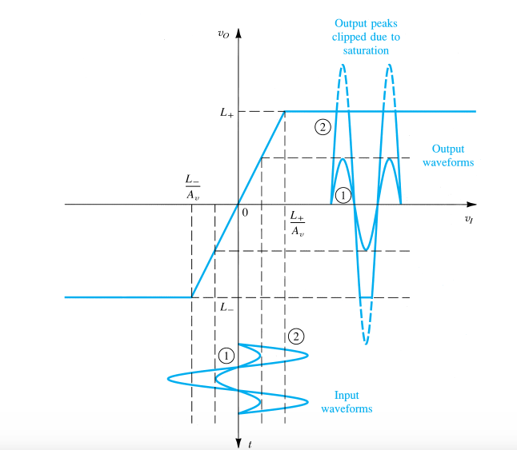

Transdutores, no geral, emitem sinais de baixa tensão (μV ou mV) e baixa energia, tornando seu processamento uma tarefa difícil. Para que o nível de tensão seja elevado, a fim de facilitar o processamento do sinal, utiliza-se amplificadores.
Amplificadores ideais ditos lineares, têm como sinal de saída uma cópia do sinal de entrada, porém com sua magnitude alterada. Esse comportamento não permite nenhuma distorção na forma de onda encontrada na saída. Esse amplificador pode ser descrito pela seguinte expressão:
A constante A é denominada ganho do amplificador e apresenta uma relação de linearidade. Caso essa relação não seja respeitada, o amplificador apresenta distorções não lineares. Os amplificadores necessitam de alimentação, pois não há criação de energia. A energia acrescida ao sinal de saída é proveniente da fonte de alimentação do amplificador. Os amplificadores são representados pelo seguinte símbolo:
A saída de um amplificador linear alimentado por um sinal senoidal é senoidal com amplitude multiplicada pelo ganho, não apresentando distorções.
Além do ganho de tensão Av, há o ganho de corrente Ai e o ganho de potência Ap, definidos pelas equações a seguir.
Desse modo, o ganho de potência Ap pode ser escrito da forma:
O ganho é adimensional, já que as unidades se cancelam. Entretanto, para fins didáticos, costuma-se utilizar unidades como V/V, A/A e W/W.
Em eletrônica é muito comum que a diferença entre as ordens de grandeza entre os sinais de entrada e saída seja muito elevada. Para isso, utiliza-se o ganho em escala logarítmica, denominada Bel (B).
A unidade Bel é muito grande, pouquíssima variação para grandes variações de ganho (A) e por essa razão utiliza-se seu submúltiplo, o decibel, o que evita o usso exagerado de casas decimais.
Exemplo: Tabela comparativa entre valores de Bel e decibel.
Da mesma forma, o ganho pode ser obtido pela corrente por meio da seguinte manipulação.
Contudo, a fim de comparação, pode-se utilizar o ganho através de tensão mesmo se as resistências não forem iguais, desde que seja especificado como ganho de tensao Gv.
Bem como o ganho de corrente Gi.
Há ainda uma relação entre o ganho e os ganhos de corrente e tensão.
Pode-se representar o ganho G como Gp, para fins didáticos. Afinal, o ganho é definido como ganho de potência por questões históricas. A medição logarítmica definida pela potência foi introduzida pela Bell Telephone Company, que especificava seus dispositivos através dessa unidade. Uma vez que a percepção sonora humana não é linear e sim logarítmica, o uso do ganho em decibel para especificação de atenuação em dispositivos de telefonia faz todo sentido.
Se a potência de saída é maior do que a potência de saída, o amplificador fere algum princípio de conservação de energia?
NÃOO aumento de potência é suprido pela alimentação externa do amplificador. Dessa forma, o amplificador não fere nenhuma lei de conservação de energia.
O amplificador real apresenta perdas como as por aquecimento. Portanto, é útil determinarmos a eficiência do amplificador
A potência entrando no amplificador, satisfazendo as leis de conservação, é igual a soma da da potência de entrada do sinal com a potência fornecida pelas alimentação do amplificador.
Já a potência saindo do amplificador é a potência do sinal amplificado. Portanto a eficiência pode ser descrita como visto abaixo, já que a potência do sinal é muito baixa comparada a potência da fonte (motivo da amplificação), podendo ser desprezada.
Note que a dissipação impede que a eficiência do amplificador chegue a 1.
Além de suprir a potência para amplificação, a alimentação é responsável por definir os limites de tensão do sinal amplificado. De modo que a tensão de saída não pode ser maior do que a tensão da alimentação do amplificador.
Isso traz uma importante consequência:
CALMA! Isso não é o fim do mundo, é um problema natural da engenharia, só precisamos definir bem a amplitude do sinal de entrada e garantir que a alimentação é maior, assim podemos considerá-lo linear para nossas aplicações.
Caso o sinal amplificado tenha uma tensão maior do que a de alimentação ele será ceifado com a tensão de alimentação. Esse fenômeno é chamado de saturação. Isso tudo fica mais claro na imagem a seguir.
Com um sinal de entrada dentro dos limites da amplificação, o amplificador é tido como linear, não apresentando distorções de forma.
ffdf
$$A_v = \frac{v_o}{v_i}add repository update$
A saída de um amplificador linear alimentado por um sinal senoidal é senoidal com amplitude multiplicada pelo ganho, não apresentando distorções.
Além do ganho de tensão Av, há o ganho de corrente Ai e o ganho de potência Ap, definidos pelas equações a seguir.
Desse modo, o ganho de potência Ap pode ser escrito da forma:
O ganho é adimensional, já que as unidades se cancelam. Entretanto, para fins didáticos, costuma-se utilizar unidades como V/V, A/A e W/W.
Em eletrônica é muito comum que a diferença entre as ordens de grandeza entre os sinais de entrada e saída seja muito elevada. Para isso, utiliza-se o ganho em escala logarítmica, denominada Bel (B).
A unidade Bel é muito grande, pouquíssima variação para grandes variações de ganho (A) e por essa razão utiliza-se seu submúltiplo, o decibel, o que evita o usso exagerado de casas decimais.
Exemplo: Tabela comparativa entre valores de Bel e decibel.
A GB GdB 1000 3 B 30dB 100 2 B 20 dB 10 1 B 10 dB
Para um valor de ganho (A) de 500, o ganho em bel é aproximadamente de 2,7 B e o decibel de 27 dB, evitando o uso de vírgulas.
O ganho pode ser obtido pela tensão por meio da seguinte manipulação, caso as resistências de entrada e saída sejam iguais.
Além de suprir a potência para amplificação, a alimentação é responsável por definir os limites de tensão do sinal amplificado. De modo que a tensão de saída não pode ser maior do que a tensão da alimentação do amplificador.
Isso traz uma importante consequência:
CALMA! Isso não é o fim do mundo, é um problema natural da engenharia, só precisamos definir bem a amplitude do sinal de entrada e garantir que a alimentação é maior, assim podemos considerá-lo linear para nossas aplicações.
Caso o sinal amplificado tenha uma tensão maior do que a de alimentação ele será ceifado com a tensão de alimentação. Esse fenômeno é chamado de saturação. Isso tudo fica mais claro na imagem a seguir.
Com um sinal de entrada dentro dos limites da amplificação, o amplificador é tido como linear, não apresentando distorções de forma.
ampopcurvaffdf